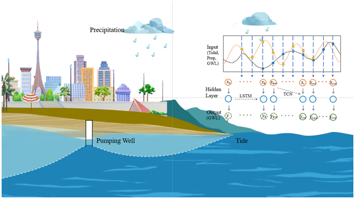

Ground Water Level Prediction
Python,seaborn, scipy numPy, Pandas
At first, we preprocess the data, then used many types of regression models to predict the ground level water in different regions of Bangladesh to install deep tube wells. For seasonal forecasting, we are using ARIMA, LSTM and GRU models. It is a funded research project by WARPO (Water Resources Planning Organization) under...